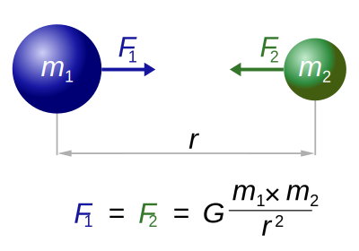

For Project 3, we chose to simulate orbital mechanics.
In order to begin simulating orbital mechanics, we need to review the Newton's Law of Gravitation (which is derived from Newton's Second Law). Newton's Law of Gravitation, $$F=\frac{gm_1m_2}{r^2}$$ uses the Inverse Square Law to describe how a body of mass \(m_1\) affects the force \(F\) on another body of mass on another body of mass \(m_2\). 
We have shown a body orbiting another stationary body. What if the second body was not stationary? We can re-formulate this as two one-body problems.
Let \((x_1, y_1)\) be the coordinates for \(m_1\) and \((x_2, y_2)\) be the coordinates of \(m_2\). Given these two coordinates, we define
\begin{align} \Delta x &= x_1 - x_2\\ \Delta y &= y_1 - y_2 \end{align}We can define the distance between the two bodies \(r\) to be
\begin{align} r &= \sqrt{\Delta x^2 + \Delta y^2} \end{align}So, the unit vector for the body \(m_1\) is now, $$\left(\frac{-\Delta x^2}{r},\frac{\Delta y^2}{r}\right)$$ and the unit vector for the body \(m_2\) is now, $$\left(\frac{\Delta x^2}{r},\frac{\Delta y^2}{r}\right)$$
Therefore, the force on the objects should be $$F \cdot \left(\frac{-\Delta x}{r},\frac{-\Delta y}{r}\right)$$ and $$F \cdot \left(\frac{\Delta x}{r},\frac{\Delta y}{r}\right)$$ with $$F=\frac{G m_1 m_2}{r^2}$$